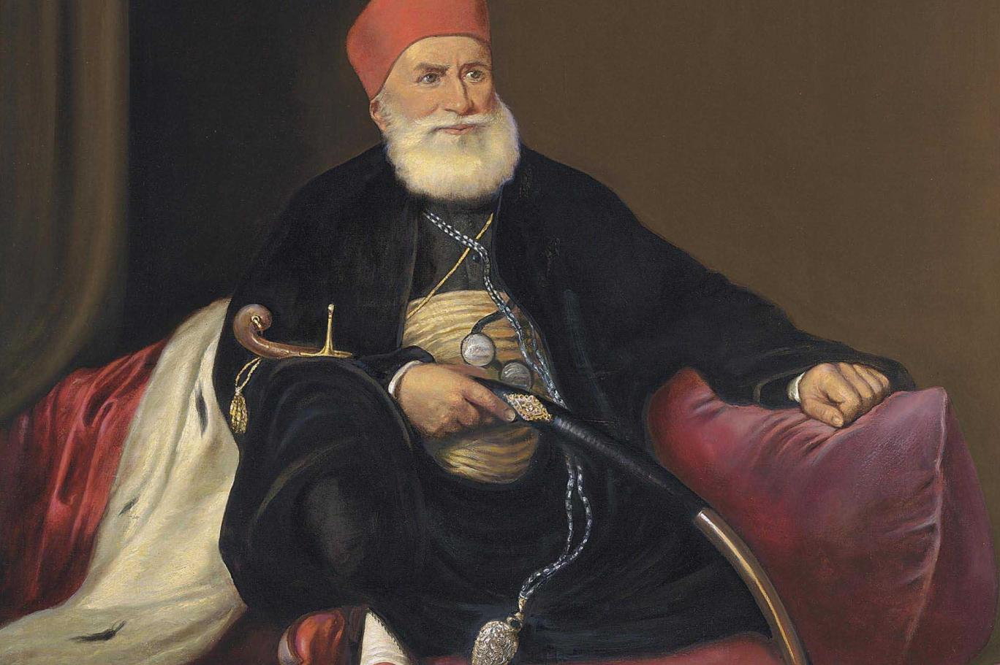

الشخصيات

الحاكم بامر الله
الحاكم بأمر الله هو المنصور بن العزيز بالله نزار بن المعز لدين الله معد بن المنصور إسماعيل بن القائم بأمر الله محمد بن عبيد الله المهدي، ولقبه الحاكم بأمر الله وكنيته أبو علي.
للمزيد

محمد علي باشا
هو مؤسس الأسره العلويه و حاكم مصر بين عامي 1805 إلي 1848 ، ويشيع وصفه بأنه <<مؤسس مصر الحديثه>> وهي مقوله كان هو نفسه أول من روج لها واستمرت بعده بشكل منظم وملفت . استطاع ان يعتلي عرش مصر
للمزيدالظاهر سيف الدين برقوق
السلطان الملك الظاهر سيف الدين برقوق بن انس بن عبدالله الشركسي، وُلد في القفقاس عام 1340م ( 740 هـ) وقدم للقاهره وعمره 20 عاما ليلتحق بالجيش المصري
للمزيد